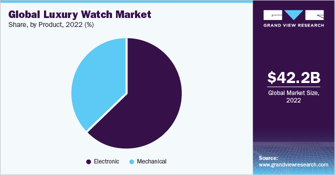
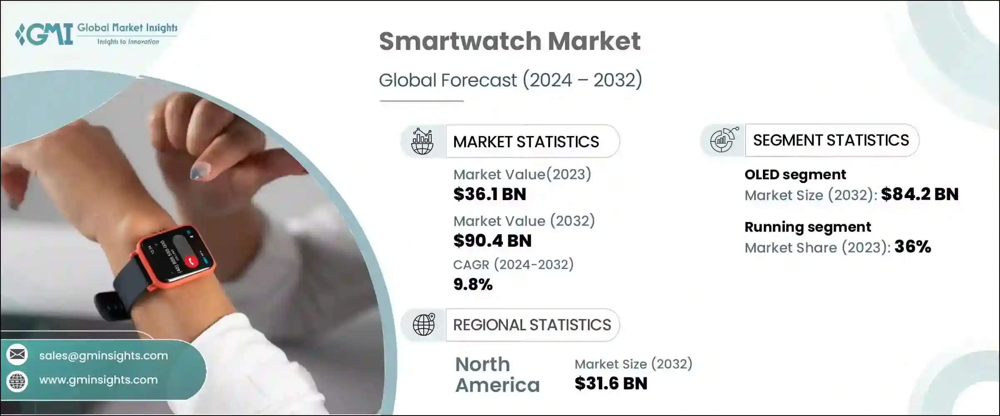
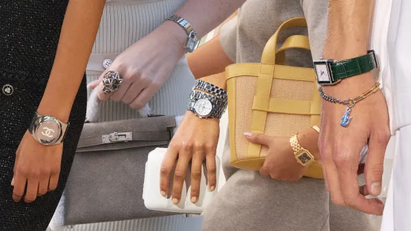

Consumer Trends
The trend of watches has evolved significantly from the early 90s to the present day. Consumer preferences and demands have shaped the watch industry, leading to the development of innovative designs and features. Let's explore the key trends in the watch market:
Watch Market Trends:
- Growing Economic Prosperity
- Significant Technological Advancements
- Changing Fashion and Lifestyle Trends
During periods of economic prosperity, when disposable income rises and consumer confidence is high, the demand for luxury and premium watches tends to increase. Affluent consumers view watches not only as functional timekeeping devices but also as status symbols that reflect their success. As personal finances stabilize and improve, consumers are more inclined to invest in high-quality watches that showcase their achievements.
Technological advancements, particularly in smartwatches, have significantly contributed to market expansion. Smartwatches offer features like fitness tracking, notifications, GPS tracking, and app integrations. The rise of wearable technology has blurred the lines between traditional watches and smartwatches. To stay competitive, traditional watch manufacturers have incorporated smart capabilities into their designs. As technology continues to advance, the watch market is expertly navigating the balance between traditional craftsmanship and cutting-edge innovation.
Changing fashion and lifestyle trends have also influenced the watch industry. Consumers now seek watches that align with their personal style, whether it's classic, minimalist, sporty, or avant-garde. The influence of celebrities, fashion personalities, and social media has played a significant role in shaping these trends. As a result, watch manufacturers are focusing on creating designs that cater to diverse consumer preferences.
